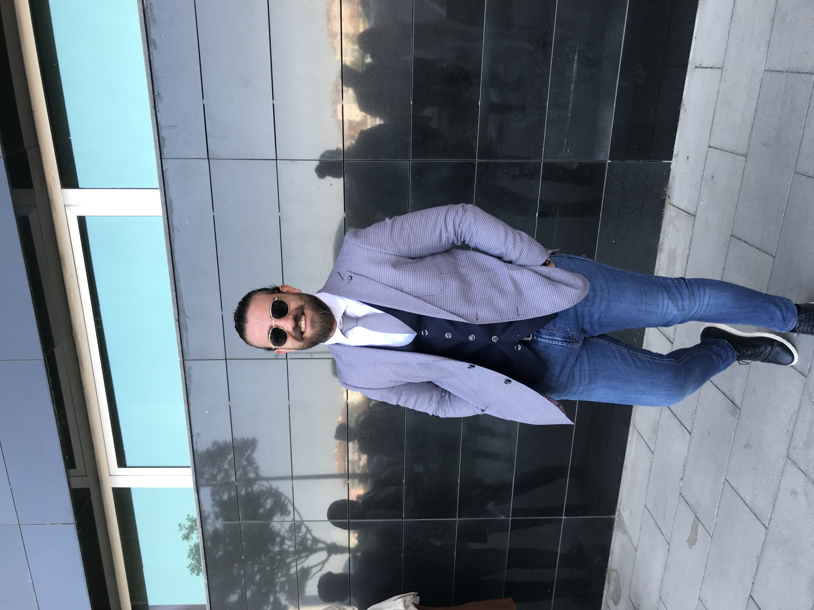
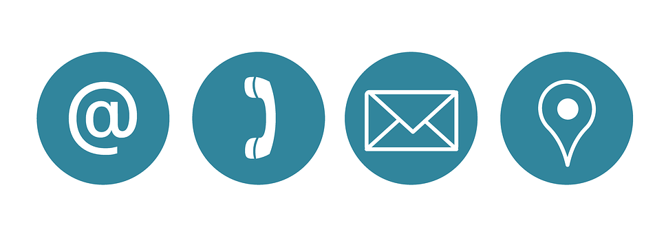

Education
- 2009-2013 | Cemil Kelesoglu Anatolian High School
- 2015-2020 | KTO Karatay University - Computer Engineering | AGNO : 2,75
Work Experience
- 2020-2023 | AKIN Yazılım Bilgisayar İth. İhr. San. ve Tic. Ltd. Şti. | R&D Engineer
- 2023-2024 | Freelance | Full Stack Web Developer
Skills
- Customer Relations and Demands
- HTML&CSS
- JavaScript | jQuery
- NodeJS
- ReactJS
- SQL & PostgreSQL
Hobbies

Contact Details
